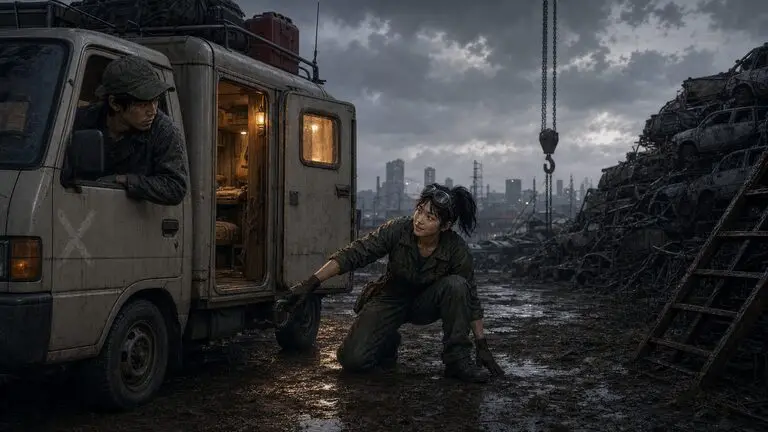

밀양 장터 · 부품 천막

거기 생활차, 공회전 한 번만 더 해봐요. 연료관 쪽에서 새는 소리 나요.
처음 보는 차인데도, 소녀는 인사보다 고장부터 짚었다.
밀양 장터 · 부품 천막
앞 대화상혁 “…그걸 소리로 알아?”
민지민지. 장날엔 여기 정비를 맡아요.
민지는 느슨한 클램프를 조였다. 엔진 소리가 조금 낮아졌다.
이쪽은 됐고… 부탁 하나만 해도 돼요?
밀양 장터 · 부품 천막
앞 대화이건 챙겨요. 여기 쌓아 둬 봐야 녹만 슬어요.
부품을 적재칸에 올린 뒤, 접힌 지도를 편다.
챙긴 것 부품 +1 · 고철 +4
저도 찾는 물건이 하나 있는데. 얘기만 좀 들어볼래요?
밀양 장터 · 부품 천막
앞 대화지도 위의 붉은 원을 짚는다.

오빠가 남긴 진단기가 울산 폐차장으로 넘어갔어요. 목소리가 남아 있을지도 몰라요.
지도 끝이 말려 올라오자 공구함으로 눌러 둔다.
혼자서는 못 꺼내요. 거기까지 태워주면, 꺼낼 때 제가 손 신호 할게요.
밀양 장터 · 부품 천막
앞 대화지도 위의 붉은 원을 짚는다.
오빠가 남긴 진단기가 울산 폐차장으로 넘어갔어요. 목소리가 남아 있을지도 몰라요.
지도 끝이 말려 올라오자 공구함으로 눌러 둔다.
혼자서는 못 꺼내요. 거기까지 태워주면, 꺼낼 때 제가 손 신호 할게요.
밀양 장터 · 달구지 곁
그럼 울산까지. 공구함은 제가 들고 탈게요.
상자를 무릎에 올려놓고 손잡이를 쥔다. 아직 어디에 묶어 둘지는 묻지 않는다.
밀양 장터 · 달구지 곁
그럼 울산까지. 공구함은 제가 들고 탈게요.
상자를 무릎에 올려놓고 손잡이를 쥔다. 아직 어디에 묶어 둘지는 묻지 않는다.
밀양 장터 · 부품 천막
알겠어요. 전 여기서 다른 방법을 찾아볼게요.
민지는 지도를 천막 기둥에 다시 꽂았다. 공구함도 그 아래 내려놓는다.
밀양 장터 · 부품 천막
알겠어요. 전 여기서 다른 방법을 찾아볼게요.
지도를 천막 기둥에 다시 꽂았다. 공구함도 그 아래 내려놓는다.
여기까지가 대화 초안이에요.
게임에서는 대화가 닫히고 밀양 장터의 다음 행동을 고르게 됩니다. 실제 게임은 현재 부모님 영상 결과에 그대로 있습니다.
이 초안의 선택은 저장되지 않습니다. 위 ‘처음부터 보기’로 언제든 되돌릴 수 있어요.
대화 초안 다시 보기